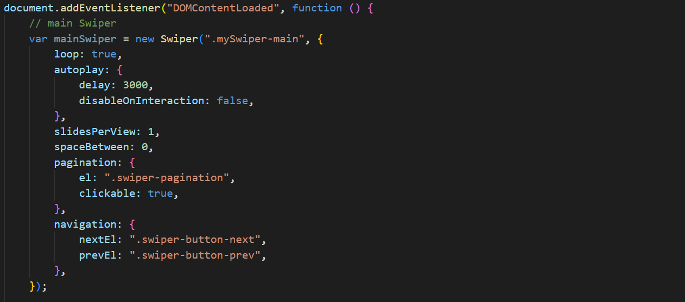

제주곶밭
반응형 웹사이트
- Period
- Type
- Project
- 2024.06.27 - 2025.04.30
- Web Design & Publishing
- 개인 프로젝트(100%)
Overview
선정이유
제주곶밭의 ‘숲과 들이 전하는 발효 라이프’라는 캐치프라이즈를 이용해 리디자인 및 퍼블리싱을 진행하였습니다
.
특히 제주도의 숲과 들이라는 이미지를 메인 주제로 잡아 국내 브랜드임을 강조하였습니다.
UIUX Info
concept
메인 이미지와 캐치프라이즈의 공간을 크게 배치하여 브랜드의 성격을 나타내었습니다.
깔끔한 레이아웃과 크기가 비슷한 오브젝트를 배치하여 통일감을 주었습니다.
다양한 제품과 프로그램을 효과적으로 보여주기 위해 부분 가로스크롤을 사용하였고, 마우스 스크롤 패럴렉스 부분을 통해 밋밋할 수 있는 소개 페이지에 재미를 주었습니다.
keywords
# 산뜻한
# 친숙한
# 깔끔한
Problem & Solution
-
1. 레이아웃
색감은 다른 작업물들과 다르지만, 요소 배치와 같은 레이아웃에 고민이 많았음.
->다양한 오브젝트를 사용하여 빈공간에 배치으로써 디자인적 느낌을 강화하였고,,
심플하면서도 너무 비어보이지 않는 디자인을 완성함. -
2. 마우스 가로스크롤
마우스로 연속된 가로스크롤을 구현 해보았지만 리스트 갯수가 적어 이어지지 않고 끊김. swipe를 이용하여 js코드를 짰지만, 마지막 리스트에서 이동하지 않음.
->여러번의 구글 서치를 통해 main swiper를 설정하는
document.addEventListener와 반복, 레이아웃, 이동방법을 설정하는 var productSwiper = new Swiper(,{})를 수정했더니 올바르게 적용.
-
3. 영상 paralax효과 주기
영상 위아래 부분에 다른 빠르기의 시차효과를 주기 위해 GSAP의 scrollTrigger를 사용하였지만 값만 재할당 될 뿐 작동하지 않는 오류.
->scrollTrigger animation 대신 addEventListener를 사용해 영상 영역을 background로 설정.
위아래 부분에 다른 빠르기는 줄 수 없었지만 paralax효과는 올바르게 적용
Review
-
Bad
-헤더의 배경이 가로 스크롤의 범위까지는 투명하다가 가로스크롤이 끝나는 부분부터 blur 처리가 되길 바랬는데 수정하지 못했다.
- 가로스크롤의 마지막 이미지가 left: 70%가 되었을 때 가로스크롤을 끝내고 다음 영역으로 세로스크롤 되기를 원했는데 구현하지 못했다.
-좋은 자료를 구하지 못해 푸터의 백그라운드 이미지 화질이 좋지 못하다.
-
Good
-처음 구상할 때 생각했던 scrolltriger를 이용한 가로스크롤, parallax를 이용한 시차 효과와 같은 스크롤 이벤트를 다 넣었다.
- 정해진 시간 내에 디자인부터 퍼블리싱까지 온전한 나의 힘으로 작업했다.
-
Review
-나의 다소 편협한 디자인 취향에 대해 반성하게 된 프로젝트였다.
다양한 컨셉으로 디자인과 퍼블리싱을 하는 것이 목표인데, 자꾸 익숙한 방향으로 디자인을 진행하다보니
결국 이전과 똑같은 방향으로 가고있다는 것이 느껴져 힘들었다.
디자인 중간부터 이런 문제를 깨닫고 마지막까지 많은 고민을 했던 것이 앞으로의 작업들에도 큰 도움이 될 것 같다.-사용된 이미지들에 한계가 있어 주어진 자료를 가공하거나 제작할 수 있는 능숙한 툴 능력이 필요하다고 생각했다
-스스로의 한계와 가능성을 알게 된 작업이였던 것 같다.